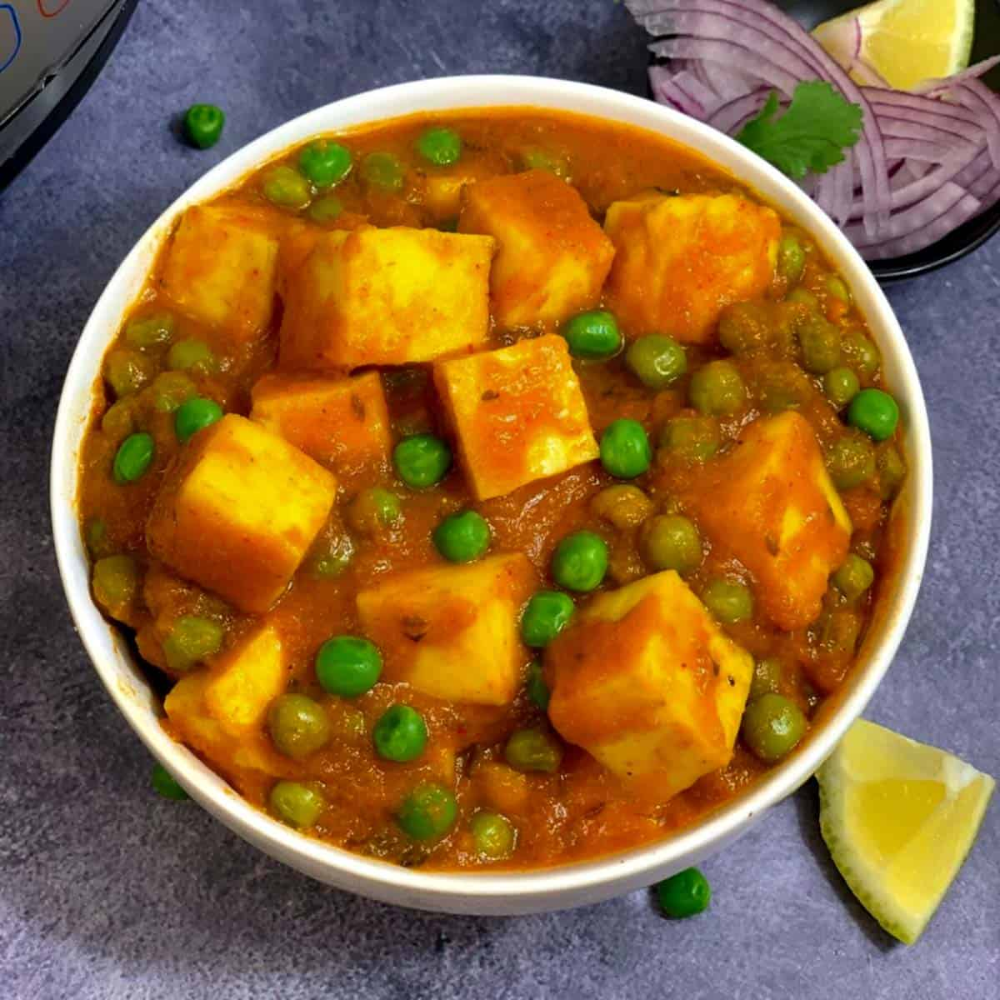

Matar-Paneer Recipe

Description
Matar Paneer is a North Indian curry dish made with peas (matar) and paneer (Indian cottage cheese)
in a tomato-based sauce, seasoned with spices.
Ingredients
- Paneer (cubed)
- Green peas (fresh or frozen)
- Tomatoes, onions
- Ginger-garlic paste
- Spices (cumin, coriander, turmeric, garam masala, red chili powder)
- Cream or yogurt (optional)
- Kasuri methi (dried fenugreek leaves)
- Oil or ghee
- Salt
Recipe Steps
- Fry paneer cubes until golden, set aside.
- In the same pan, sauté onions until golden, then add ginger-garlic paste.
- Add pureed tomatoes and cook until oil separates.
- Add spices and salt, cook for a minute.
- Add peas, water, and bring to a boil.
- Add paneer and simmer until the peas are cooked.
- Add cream or yogurt and kasuri methi, cook for another few minutes.